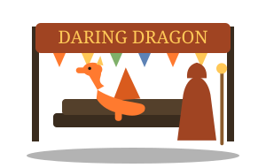

Events
The best way to pick a miniature is to hold it first. We haul the print case to markets and conventions around Charlotte, where you can see every sculpt up close and pick your filament in person.

Where to Find Us
- First Friday Night Market — Camp North End, Charlotte. First Friday of every month, 6 to 10 pm. The full shelf travels to this one, including the Dice Guardian.
- Clash of the Carolinas — Game convention, Charlotte Convention Center. We run a demo table with paint-your-own wyrmlings while supplies last.
- NoDa Holiday Makers Market — December weekends. Gift bundles: a mini, a dice set, and a coin pouch, wrapped and table-ready.
Dates can shift with venue schedules, so check back before you drive. If a market matters to you and it is not listed, message us and we will tell you whether the case is coming.
What Travels
The case carries every sculpt from The Hoard, plus a few one-off test prints that never make the website. Anything you see at a booth can be reserved on the spot, and commissioned work can be handed over in person, saving the shipping cost.